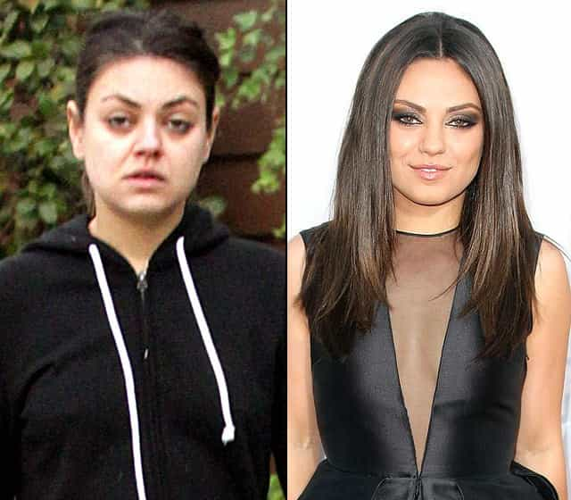

< < < Back
Why Does Anita Sarkeesian Wear So Much Makeup? – Return Of Kings
After years of attacking those who generate and enjoy the make-believe games of their choice, Anita Sarkeesian has developed quite the celebrity profile (and cash-flow to go with it). What hasn’t been answered, however, is why a woman supposedly obsessed with unrealistic portrayals of women in fictional mediums unrealistically portrays herself every day to the world.
Through the use of copious amounts of cosmetics, Sarkeesian is supporting a standard of beauty (not that I find her attractive in any sense) that is entirely unreachable for many women without substantial artificial assistance.
Does anyone know what the real Anita Sarkeesian looks like, day-in, day-out? No. So why is she so enamored with fiction when, like most women, she presents her own fundamentally fictionalized physical self every day?
As we are used to with other SJWs, Anita Sarkeesian preaches and shrilly demands a standard in one arena (again, might I add, a series of fictional ones) that she has no intention of holding herself to in the domain of real life. Feminist Frequency’s founder is, in fact, an active, willing participant in and progenitor of the dissemination of unrealistic portrayals of women. Pretty much the only time she does not further this fantasy is after she showers or when she lounges about at home, makeup-less and in her track pants, away from the camera lenses.
Contradicting her own mission
Anita Sarkeesian in no sense looks like this sans make-up. She wants women of “normal body types” featured in games, without all the glamorous make-up and sexualization, but what exactly is she doing here other than participating in a similar portrayal?
Yes, Sarkeesian’s mission is to foist feminist standards of compliance upon the world of video games. More than this, though, her stated goal is to enforce these standards so that it somehow all reflects back into the real world, where a lack of these standards in fictional mediums is allegedly so pernicious for actually breathing, non-digital females.
“Empowering women” with reality, diversity and representation doesn’t seem to extend to Sarkeesian’s own presentation of herself. It additionally goes beyond the fakery of video games, as at least people know video games and their characters are existentially largely confined to consoles.
The illusion of makeup and other related means of altering your appearance are harder to distinguish and easier to forget, given their ubiquity in modern society. This is a distinction Sarkeesian is deliberately and pigheadedly ignoring. Her war cry is basically, “Let’s rage against the patriarchy’s video game industrial complex and physical expectations of women while I paint myself with another five layers on my face before I appear on camera or in public!”
Do as I say, not as I do

Sarkeesian lambasts the pressures on women to look “perfect”, either through video games or general society and celebrities (like Mila Kunis!), but she reinforces and gives weight to these pressures with her own behavior.
It should not come as a shock that SJWs and many women in general can get away with doing things that they expressly claim to be against. It’s why intransigently hypocritical ESPN presenter Britt McHenry could cloak herself as an advocate for female body image and respect online, but later be filmed unleashing verbal abuse on a woman for her weight, perceived level of attractiveness, teeth, job, minimum wage earnings, scarce educational qualifications, purported intelligence and personality. All because McHenry, the great genius she is, was dumb enough to do something that got her vehicle towed.
Sarkeesian’s great escape, admittedly bereft of McHenry’s overt yelling, has been channeling misappropriated and concocted anger over “falsified” video game “stereotypes” whilst simultaneously worshiping at the altar of make-up and other means for enhancing her appearance beyond nature’s own reality.
What exactly is Sarkeesian’s retort to this? Because make-up is already so entrenched, and immersive, visually-realistic video games (as opposed to more linear varieties) are only two or so decades old, caking herself in product is somehow acceptable and internally consistent of her?
Sarkeesian’s physical presentation of herself confirms the “competing female” theory
A more accurate rendering of what Sarkeesian looks like day-to-day, but still not the original picture.
The way women physically present themselves in real life, especially to one another, does have an impact on female psychology. Studies argue that women cover themselves in cosmetics and generally dress up for the purpose of impressing other women. Obviously, this needs to be construed within the overall framework of the sexual marketplace, where (heterosexual) men and women compete with members of their own gender of the same sexual orientation.
Sarkeesian is not immune to being enraptured by this phenomenon. It explains why she can pontificate against video games on the one hand, but be a mindless slave to the stereotype of artificially enhanced female beauty, which she would otherwise call sexist and demeaning, on the other.
It goes even further. The problems associated with a hyper-focus on personal looks—anorexia, bulimia, body dysmorphic disorder (BDD) and less clinically diagnosed predilections such as low self-esteem—are only exaggerated by women themselves.
Forget “patriarchy”; when tens or hundreds of millions of women follow each other in constant bids to project appearances they don’t fundamentally have, they are all legitimizing and participating in the stereotypes feminists blame on men and male desire, not to mention exacerbating the misery of women unhappy with their visages relative to those of the women they see on the street or on billboards.
With hundreds of thousands of dedicated (read: hapless) followers, Sarkeesian and her fictionalized appearance reinforce this more than 99.99% of the population, male or female.
Ego, ego, ego

Right… because digitized, highly filtered and made-up representations of yourself with blue-screen backgrounds are realistic, unlike video games?
Either Sarkeesian wants a realistic portrayal of women across society and culture or she doesn’t. Cherry-picking the areas in which you live your declared ethos, as Sarkeesian has for years, simply isn’t good enough. It is becoming increasingly evident that one of Time‘s reigning “100 most influential people” is using Feminist Frequency and its associated campaign as a vehicle for her own self-aggrandizement and narcissism. Otherwise, why is she clamoring against one set of “stereotypes” in the media while slavishly adhering to others in her own life?
The praise which has accompanied Sarkeesian’s “work,” even if we forget its underlying falseness, depends on continual de-compartmentalization. Supporters of her have to disengage the logical parts of their brain, which attack unseen “patriarchal” elements for insisting on high standards of female beauty and behavior (the unseen part itself illogical) but avoid admitting female agency for complicity in upholding those same standards.
Maybe you should feel sorry for Sarkeesian next time you hear about or see her. It’s awfully hard being a hypocrite.
Read More: Did Anita Sarkeesian Commit Felony Wire Fraud? (UPDATE)